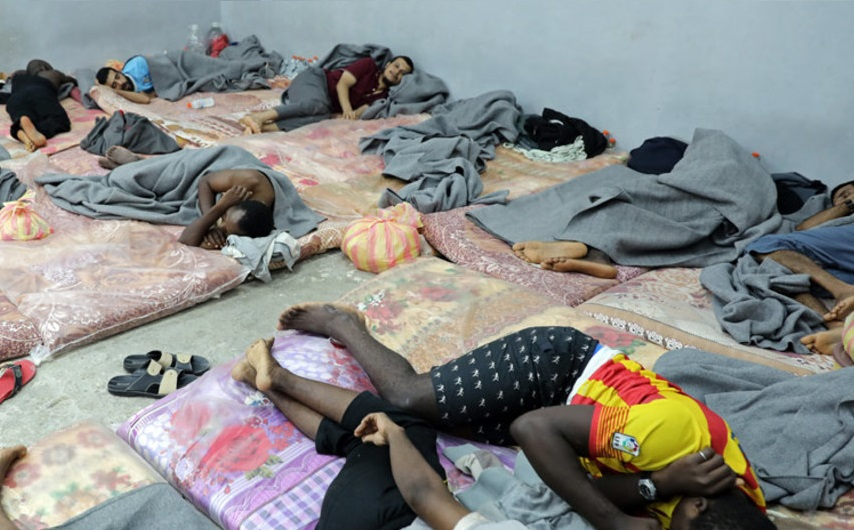
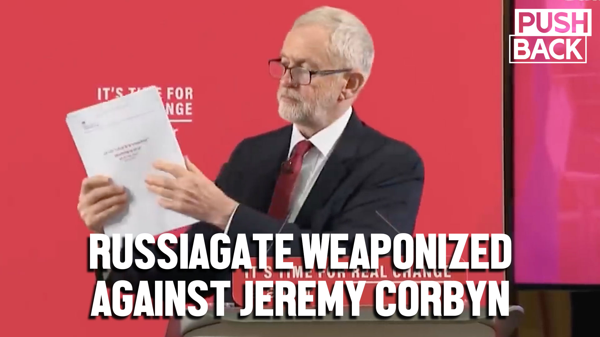
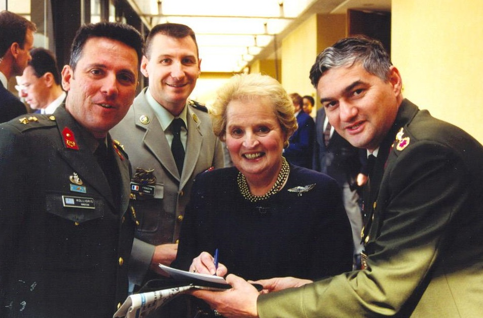
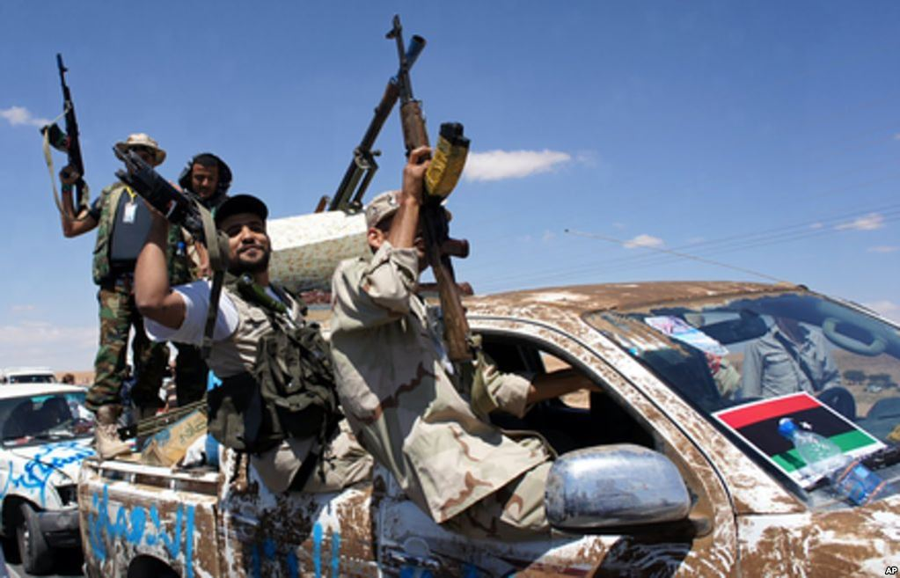
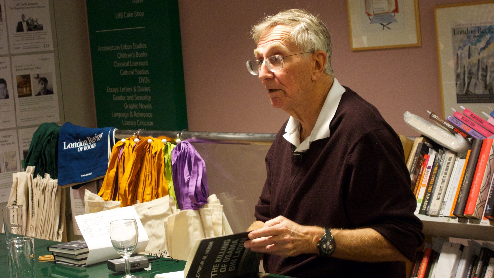

How NATO set the stage for open-air slave markets in Libya

A viral video of a slave auction in Libya that aired on CNN has led to a deluge of interest in the country and outraged protests across the West.
While NATO’s regime-change war was a crucial factor in creating the social conditions for slavery, American corporate media has managed to airbrush this inconvenient fact out of its renewed coverage of the snowballing crisis in Libya.
Not only did NATO destabilize Libya by waging a brutal military operation that ended in the grisly murder of Libyan President Muammar Gaddafi; it knowingly used anti-Black insurgents as proxies in the pursuit of cynical imperial objectives.
When NATO invaded Libya, it do so under a phony humanitarian pretext, claiming that its attack jets were the only thing preventing Gaddafi’s army from carrying out a genocide.As a British parliamentary report concluded, this was false.
A negotiated settlement between the Gaddafi government and anti-government Libyans could have been reached without the wholescale destruction of the country and the social collapse that resulted, the most morbid symptom of which was the birth of slave markets.
Rejecting all options for a diplomatic solution, NATO de-railed the possibility of negotiations and opted for war instead.
The Western powers cannot claim to have been ignorant about what they were unleashing.There were reports of racist violence being carried out by anti-government actors in Libya before NATO started bombing the country.
Members of the opposition justified attacks on Black people in Libya, many of whom were migrants workers from sub-Saharan Africa, by baselessly accusing them of being mercenaries for the Libyan government.Two days into the uprising against the government, Al Jazeera quoted an activist as saying that protesters had executed 50 'African mercenaries.'
In an NPR report from February 25, 2011, a Turkish oilfield worker who fled Libya said, 'We had 70 or 80 people from Chad working for our company.They cut them dead with pruning shears and axes, attacking them, saying you’re providing troops for Gaddafi.The Sudanese, the Chadians were massacred.We saw it ourselves.'
A March 6 Christian Science Monitor article noted, 'During the past few weeks of uprising in Libya, hundreds of African migrant workers have been detained, beaten, or harassed.'The report described thousands of migrants from sub-Saharan Africa 'too scared to try to make their way out of the country for fear of being beaten or killed by rebel mobs flush with animosity for anyone with dark skin and African features.'
Ghana, the article noted, had repatriated more than 500 of its citizens who were working in Libya and they returned with stories of looting, threats, and beatings.When NATO entered the war, it did so with full knowledge that it was bolstering the forces reportedly carrying out atrocities against Black people.
The Canadian Air Force flew a full 10 percent of NATO’s missions against Libya.As the Ottawa Citizen reported, just days before NATO invaded, Canadian intelligence specialists sent a briefing report shared with senior officers warning, 'There is the increasing possibility that the situation in Libya will transform into a long-term tribal/civil war,' and that, 'This is particularly probable if opposition forces received military assistance for foreign militaries.'
NATO airstrikes began March 19.On March 23, the Los Angeles Times revealed the existence of a prison run by the Libyan opposition that held 'some 50 Libyan and African men' in what resembled 'a scene out of the movies about the dreaded penal colonies of French Guyana.'In the picture accompanying the article, all of the detainees depicted were Black.
The article described Alfusainey Kambi, an African prisoner, declaring, 'I am a worker, not a fighter.They took me from my house and [raped] my wife.'An opposition official 'produced two Gambian passports.One was old and tattered and the other new.And for some reason, the official said the documents were proof positive that Kambi was a Gaddafi operative.'
A followup story the next day described the prisoners being 'hauled out of dank cells that stank of urine and rot.'The article noted the presence of '25 detainees from Chad, Niger, Sudan, Mali and Ghana described by opposition officials as mercenaries, though several of them insisted they were laborers.The [opposition] officials declined to say what would become of them.'
The report added, 'For a month, gangs of young gunmen have roamed [Benghazi], rousting Libyan blacks and immigrants from sub-Saharan Africa from their homes and holding them for interrogation as suspected mercenaries or government spies.'
Less than two weeks into the war, when a negotiated end was still possible, the Globe and Mail added to the growing pile of evidence of an anti-Black pogrom by Western-backed militants: 'Rebels have frequently treated dark-skinned prisoners more harshly than men of Arab ancestry,' the paper reported.
Ten days into the Western bombing, U.S.NATO commander Adm.James Stavridis offered one of the first indications that Western intervention would spawn the rise of Al Qaeda in Libya.In Senate testimony, the admiral declared that Libyan opposition leaders appeared to be 'responsible,' but 'we have seen flickers in the intelligence of potential al Qaeda.'
The British parliamentary report found that 'Libyan connections with transnational militant extremist groups were known before 2011, because many Libyans had participated in the Iraq insurgency and in Afghanistan with al-Qaeda.'The Citizen noted that later, members of the Canadian military would privately joke about Canada’s CF-18s being part of 'al-Qaida’s air force,' since their bombing runs helped to pave the way for rebel groups aligned with the group.
The anti-Black sentiment of such extremist groups was well known.Less than a year before President Obama enabled these forces in Libya, he criticized their racism toward Africans.
On April 3, the government of Chad 'called on coalition forces to protect its citizens in rebel-held areas in Libya, saying dozens had been accused and executed for allegedly being mercenaries.'It was public knowledge that the Libyan opposition contained anti-Black elements and NATO continued a war that would empower them.
Multiple opportunities for a negotiated settlement remained possible for weeks but NATO opted to decimate the country instead.
To understand why NATO pursued regime change in Libya, it is necessary to see the attack in the context of the United States’ desire to expand Africa Command (AFRICOM), an organization based in Germany and in charge of U.S. military relations with 53 African states.
Washington wanted to do so as a means of exerting control over Africa’s valuable resources, especially in the context of China’s increasing influence in the continent, as Concordia University’s Maximilian Forte demonstrates in his book 'Slouching Toward Sirte.'
In 2008, American Vice Admiral Robert Moeller said that one of AFRICOM’s aims was to ensure 'the free flow of resources from Africa to the global market,' and in 2010 he said one of AFRICOM’s purposes is 'to promote American interests.'
Though the organization claims its command is 'indirect,' AFRICOM commander General Ham said this 'does not mean we simply wait for others to ask for our support.I expect our Command to actively seek and propose innovative and imaginative approaches through which we may apply the considerable military capability of the United States to its best advantage.'
Forte, however, cited cables from the U.S. embassy in Tripoli showing American frustration with African governments, 'mostly notably … Libya,' which prevented the U.S. from establishing a base for AFRICOM operations in Africa.
After the Libyan government was overthrown, and before its people could organize an election, AFRICOM announced that a new military relationship had been established with the new Libyan government that was appointed by the National Transitional Council (NTC), the main body of the Western-backed Libyan opposition.
The U.S. promptly established an Office of Security Cooperation at the U.S. Embassy in Tripoli to 'help coordinate security assistance, international military education and training and other security cooperation.'
That the Western powers were also interested in plundering Libya in the immediate term is documented in 'Global NATO and the Catastrophic Failure in Libya,' by Horace Campbell, a professor of African American studies and political science at Syracuse University.
Campbell’s examination of Wikileaks cables finds that, from 2007 to 2008, Western oil companies such as the American firm Occidental were 'compelled to sign new deals with [Libya’s] National Oil Company, on significantly less favorable terms than they had previously enjoyed.'
A January 2010 U.S. diplomatic cable published by Wikileaks showed that oil companies and the American government were frightened by the Gaddafi government’s 'rhetoric in early 2009 involving the possible nationalization of the oil sector.'
Near the end of the NATO intervention, the British defense secretary remarked that business people should 'pack their bags' for Libya, and the U.S. ambassador in Tripoli claimed that Libya had a 'need' for American companies on a 'big scale.'
The Western powers involved knew they were taking actions that would empower groups whose aims were anti-Black and far from democratic, and they did so with the most cynical goal in mind: to dominate and plunder Africa.
Posted On: 2017-12-05T00:00:00
Posted By: Thomas Hedges




Content Date: 2017-12-05
Download Date: 2021-05-07
Document ID: L0C04AUKG